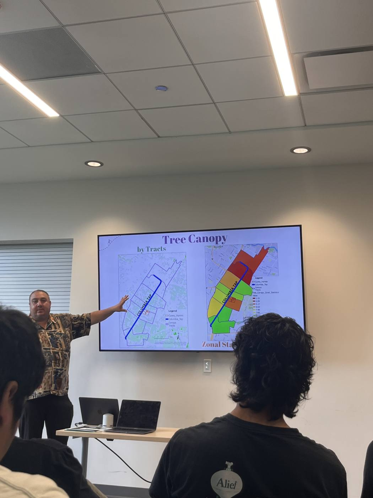
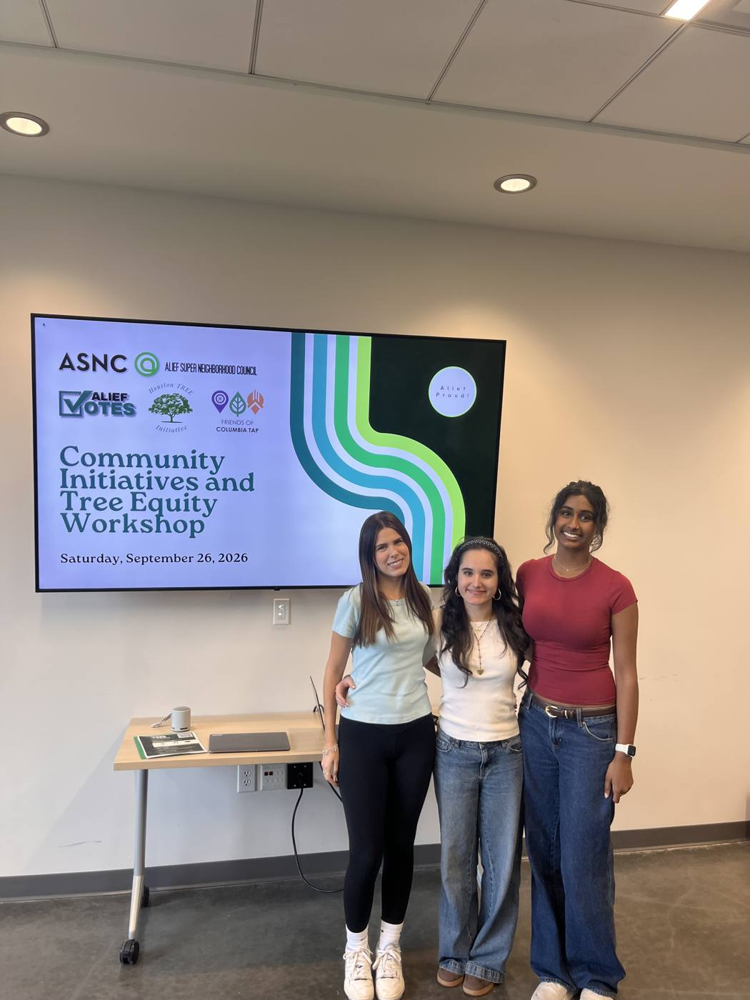

1,000+
Trees planted
Native trees in Third Ward and Alief, planted by TREE or alongside partners.
Together for Restoration & Environmental Equality
The Houston TREE Initiative is a student-run nonprofit started by Vedika Tandon. We plant and care for trees in parts of the city that have the least shade.
Some Houston neighborhoods are up to 17° hotter than others because they have so few trees. TREE plants trees there and teaches residents how to look after them.
Read more 02Vedika Tandon founded TREE and serves as its president. She sets up the partnerships, organizes the plantings, recruits volunteers and runs community workshops.
About Vedika 03More than 1,000 trees planted along the Columbia Tap Trail and in Alief, working with 8 organizations and 300+ volunteers.
See the numbers1,000+
Native trees in Third Ward and Alief, planted by TREE or alongside partners.
8
Nonprofits, neighborhood groups and city partners. See the list
—
Classmates (not counting Vedika) who have planted trees with TREE.
—
Total visits to this website.
1,000 / 2,000
Many of Houston’s lower-income neighborhoods have very few trees, which makes them urban heat islands. Residents there deal with more heat, worse air and more flooding, and that affects their physical and mental health.
TREE plants trees where they’re missing, comes back to keep them alive, and shows neighbors how to care for them. We want Houston to be greener, healthier and fairer for everyone who lives here.
17°
~14%

Help Houstonians see how many of their neighbors are affected by environmental injustice, and what they can do to help.
Plant thousands of trees in the neighborhoods with the highest summer temperatures and the least tree cover.
New trees are fragile for their first few months, so TREE goes back to water and mulch them.


Founder & President
Vedika started TREE after reading research showing that Houston’s poorer neighborhoods have far fewer trees, and are much hotter, than wealthier ones. Here is what she has done since.
Founded the nonprofit based on research from Rice University’s Kinder Institute, HARC and environmental-justice scholar Dr. Robert Bullard.
Including Trees for Houston, Friends of Columbia Tap, the Alief Super Neighborhood Council and Sewa International.
Five plantings and a tree-care day in Third Ward and Alief. TREE was the main organizer of Alief Planting #2.
Brought in classmates and neighbors and taught them how to plant, mulch and water new trees.
Planned and hosted a public workshop with guest speakers from Friends of Columbia Tap and Trees for Houston.
Honorable mention in the National Geographic Slingshot Challenge (top 50 of 2,300 entries).
Leadership


National Geographic Slingshot Challenge
TREE received an honorable mention for a one-minute video about its work. The team made it to show what they had done and to encourage others to push for more trees where they live.


With Friends of Columbia Tap and other environmental groups, TREE planted native saplings along the full four-mile Columbia Tap Trail in Third Ward, a neighborhood with little shade.
With Friends of Columbia Tap


TREE planted trees on the esplanades (street medians) in Alief to add shade and green space.
With Alief Super Neighborhood Council, AliefVotes & Sewa International


The team went back to mulch trees from earlier plantings and built two large beds for native fruit plants. The plants feed pollinators and give neighbors free fruit.
With Friends of Columbia Tap & Texas A&M AgriLife


More trees along the trail, to make it a shady place for Third Ward residents to walk.
With Friends of Columbia Tap


Planting along a long stretch of the Columbia Tap Trail as part of Houston’s green corridor.
With Friends of Columbia Tap, Texas A&M AgriLife & others


TREE organized this planting and worked with partners to finish planting the medians on S. Dairy Ashford.
With Alief Super Neighborhood Council & Sewa International


A free public workshop on how community projects get started, why tree cover matters and how people can help. The guest speakers were Ed Pettitt, president of Friends of Columbia Tap, and Barry Ward, executive director of Trees for Houston.
With AliefVotes, Alief Super Neighborhood Council, Friends of Columbia Tap & Trees for Houston
Watch the full recording Friends of Columbia Tap
Friends of Columbia Tap Trees for Houston
Trees for Houston Alief Super Neighborhood Council
Alief Super Neighborhood Council Sewa International (Houston)
Sewa International (Houston) AliefVotes
AliefVotes FIFA World Cup Sustainability Subcommittee
FIFA World Cup Sustainability Subcommittee Houston Wilderness
Houston WildernessThe research and reporting that TREE’s work is based on, covering tree inequality in Houston and beyond.
Next planting
Saturday · 3616 Briley St, Houston
RSVP by emailDonate
All donations pay for tree plantings in underserved Houston neighborhoods and are tax-deductible.
Arrange a donationContact
If your school, group or neighborhood wants to host a planting, get in touch.